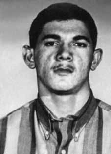

Jarbas
Pereira
Marques
CIRCUNSTÂNCIAS DA MORTE
Jarbas Pereira Marques foi morto, junto com outros cinco integrantes da VPR, entre os dias 8 e 9 de janeiro de 1973, no episódio conhecido como massacre da Chácara São Bento, em operação conduzida pela equipe do delegado Sérgio Paranhos Fleury, do DOPS/SP, com a colaboração do ex-cabo José Anselmo dos Santos, que era dirigente da VPR e atuava como agente infiltrado.
O “Cabo Anselmo” era controlado por Fleury e suas ações eram acompanhadas por agentes do Estado, tendo contribuído com a captura e morte de vários militantes políticos. No momento em que Anselmo articulou a emboscada contra os seis integrantes da VPR, com o objetivo de desmantelar o movimento de guerrilha urbana no Nordeste do Brasil, já havia fortes suspeitas, dentro da organização, quanto à sua atuação como agente infiltrado.
A versão oficial, veiculada pela imprensa na época, registrava que os militantes tinham sido mortos durante um tiroteio travado com os agentes de segurança na Chácara São Bento. A partir de suposta delação de José Manoel da Silva, preso no dia 7 de janeiro, a polícia teria localizado o aparelho, onde seria realizado um congresso da VPR.
O Ofício nº 002/75-GAB/CI/DPF, de 17 de março de 1975, encaminhado pelo diretor do Centro de Informações do Departamento de Polícia Federal ao chefe da Agência Central do SNI, relatou que os militantes foram mortos “[…] à bala quando do desbaratamento de um Congresso Terrorista em Recife/PE, no dia 08-01-73, no Município de Paulista no Loteamento São Bento […]”. Pouco tempo depois do ocorrido, integrantes da VPR questionaram a versão divulgada e, em fevereiro de 1973, publicaram no Chile um pronunciamento no jornal Campanha, no qual afirmavam que a “Vanguarda Popular Revolucionária do Brasil não realizou tal congresso, que tal informação é um pretexto mentiroso para justificar o assassinato desses seis (6) lutadores da causa antifascista”.
Na mesma declaração, responsabilizaram o “Cabo Anselmo” pela delação dos militantes de Pernambuco. Os órgãos de segurança registraram o pronunciamento da VPR na Informação nº 217/DIS-COMZAE-4 do DEOPS/SP, e a encaminharam à Divisão de Informações de Segurança da 4ª Zona Aérea da Aeronáutica. Não obstante, a versão oficial foi mantida pelos Relatórios das FFAA enviados ao então ministro da Justiça, Maurício Corrêa, em dezembro de 1993.
Sobre Jarbas, consta no Relatório da Marinha: “JAN/73, terrorista e agitador. Foi morto em Paulista/PE em 08/01/73, ao reagir a tiros à voz de prisão dada pelos agentes de segurança”. As investigações realizadas pela CEMDP, pela CEMVDHC e pela CNV comprovaram que não houve tiroteio, que os militantes foram capturados em lugares e ocasiões diferentes e mortos sob tortura, de modo que o tiroteio foi somente uma encenação para justificar as mortes.
Um primeiro indício da falsidade da versão oficial pode ser extraído do Exame de Perícia em Local de Ocorrência, elaborado em 9 de janeiro de 1973 pelo Instituto de Polícia Técnica, uma vez que não faz menção a marcas de projéteis nos cômodos em que foram encontradas as vítimas, com exceção da cozinha que, segundo consta no exame, “apresentava vários orifícios produzidas por projéteis de arma de fogo”. Não se sustenta, tampouco, a ideia de que o aparelho foi localizado a partir de delação de José Manoel.
A operação de captura dos militantes pelos órgãos de segurança, sob o comando de Fleury, foi possível graças à atuação de “Cabo Anselmo” como agente duplo. Essa atuação é comprovada pelo Relatório de Paquera produzido pelo “Cabo Anselmo” e enviado ao DOPS/SP, em que relatava a rearticulação da VPR no Nordeste e o contato que estabeleceu com as vítimas antes da chacina, demonstrando a estreita vigilância policial a que estavam submetidos os militantes. Testemunhas relataram que Jarbas estava trabalhando na Livraria Moderna, em Recife, dia 8 de janeiro de 1973, quando, perto das 14h, recebeu um telefonema e em seguida saiu com duas pessoas estranhas e nunca mais foi visto.
Em depoimento prestado à CEMDP, em 1996, a advogada Mércia de Albuquerque Ferreira relatou que Jarbas a procurou três dias antes de sua captura para relatar suas desconfianças. Segundo a advogada, Jarbas disse que sabia que seria preso em poucos dias, que o delegado Fleury estava em Recife e que sabia da infiltração e traição do ex-cabo Anselmo. Mércia relatou, ainda, que na noite do dia 8 de janeiro, a mãe de Jarbas a procurou dizendo que seu filho tinha sido levado da livraria onde trabalhava por dois homens desconhecidos.
Outros militantes foram presos no mesmo dia. Sonja Cavalcanti, proprietária da boutique Chica Boa, declarou à CEMDP, em 1996, que Pauline e Soledad foram capturadas em sua boutique por cinco homens que se diziam policiais e estavam em um carro do Instituto Nacional de Colonização e Reforma Agrária (Incra). Sonja relatou que a ação foi muito violenta, que os homens espancaram Pauline, acertando-a até com coronhadas, e que as duas mulheres foram levadas amarradas.
Sonja também prestou depoimento à CEMVDHC, no qual reconheceu o delegado Sérgio Paranhos Fleury como um dos responsáveis pela captura de Soledad e Pauline em sua boutique. Nesse dia, também foram efetuadas as prisões de Eudaldo, de Jorge Barrett e sua esposa. Jorge Barrett relatou para a CEMVDHC que Fleury também participou da sua detenção. Houve, portanto, uma ação coordenada que resultou nas prisões, indicando que ao menos duas equipes atuaram na operação de cerco aos militantes.
Ainda com relação à autoria, em depoimento prestado para a CNV em 30 de outubro de 2012, o ex-sargento do Exército Marival Chaves afirmou que, além do informante Anselmo e do delegado Fleury, a operação que resultou na prisão e morte do grupo da VPR contou com a participação, pelo CIE, de José Brant Teixeira, Paulo Malhães, Félix Freire Dias e Rubens Gomes Carneiro (o Laecato). Também informou que a operação foi paga com recursos do CIE, com verbas descaracterizadas.
Outro depoimento relevante foi prestado em 1996, à CEMDP, pela advogada Mércia de Albuquerque Ferreira, que teve acesso aos corpos das vitimas no necrotério. A advogada relatou que “todos os corpos estavam muito estragados, marcas de pancadas, cortes”. Segundo Mércia, particularmente, o corpo de Jarbas estava tão inchado que não coube em um caixão normal. Ela relatou ainda: “Jarbas que eu conhecia muito estava também numa mesa estava com uma zorba azul clara e tinha uma perfuração de bala na testa e uma no peito e uma mancha profunda no pescoço de um lado só como se fosse corda e eu fiquei com os olhos muito abertos e a língua fora da boca que me deixou assim muito chocada”.
A mãe de Jarbas também esteve no necrotério e reconheceu o corpo do filho. Não obstante, Jarbas foi enterrado como indigente no cemitério da Várzea. Posteriormente, a família conseguiu autorização para enterrá-lo e resgatou o corpo. A CEMVDHC está realizando investigações sobre o local em que foram mortos os militantes da VPR, com apoio do testemunho e da colaboração de Jorge Barrett.
As investigações estão em curso, mas levantam indícios no sentido de que os militantes teriam sido mortos sob tortura em aparelho situado em Abreu e Lima e identificado pelos integrantes da VPR como Sítio São Bento, e não no local indicado como a Granja São Bento, localizado em Paulista, que corresponde ao lugar tradicionalmente apontado pela literatura como cenário das mortes.
Segundo depoimento prestado por Jorge Barrett à CEMVDHC, havia um equipamento de recuo da VPR em Abreu e Lima, onde viviam Pauline e Eudaldo. Este “aparelho” era chamado pelos membros da organização de Sítio São Bento e deveria funcionar como um local para receber pessoas que estivessem em perigo de vida e levar futuros sequestrados. Em razão da suspeita de identificação do local pela repressão, Pauline e Eudaldo teriam ido para outro equipamento situado em Rio Doce, onde era o aparelho de Soledad e de “Cabo Anselmo”.
A partir dessas informações, a CEMVDHC tem trabalhado com a possibilidade, ainda não confirmada, de o aparelho em Abreu e Lima ter sido o local das mortes. No depoimento prestado, Jorge Barrett sugere que a Granja São Bento, apontada oficialmente como local da chacina, teria sido utilizada pela repressão para a encenação das mortes, mas não corresponderia ao aparelho mantido pela VPR. Essa hipótese ganhou força após um trabalho de reconhecimento feito pela CEMVDHC em parceria com Jorge Barrett, que conseguiu identificar o local do Sítio São Bento.
Testemunhos colhidos de moradores da região reforçam essa hipótese, uma vez que eles se recordam do local como “Sítio dos Cabeludos” e relatam ter presenciado os militantes levados amarrados, bem como os corpos retirados em redes. No momento em que a CNV encerra as suas atividades, encontra-se em andamento um trabalho pericial realizado pela polícia científica de Pernambuco para avançar na identificação do local em confronto com os laudos e fotografias da época. Portanto, os resultados parciais das investigações conduzidas pela CEMVDHC apresentam indícios que apontam para a possibilidade de os militantes terem sido capturados em locais e momentos distintos e levados ao equipamento de recuo da VPR, situado em Abreu e Lima, chamado Sítio São Bento, possivelmente para fazer o reconhecimento do local, onde teriam sido torturados e mortos.
Jarbas Pereira Marques was killed, along with five other members of the VPR, between the 8th and 9th of January 1973, in the episode known as the Chácara São Bento massacre, in an operation conducted by the team of delegate Sérgio Paranhos Fleury, from DOPS/SP, with the collaboration of former corporal José Anselmo dos Santos, who was a leader of the VPR and acted as an undercover agent.
“Cabo Anselmo” was controlled by Fleury and his actions were monitored by State agents, having contributed to the capture and death of several political activists. At the time Anselmo organized the ambush against the six members of the VPR, with the aim of dismantling the urban guerrilla movement in the Northeast of Brazil, there were already strong suspicions within the organization regarding his role as an infiltrated agent.
The official version, published by the press at the time, recorded that the militants had been killed during a shootout with security agents at Chácara São Bento. Based on an alleged statement from José Manoel da Silva, arrested on January 7th, the police allegedly located the device, where a VPR congress was to be held.
Official Letter No. 002/75-GAB/CI/DPF, dated March 17, 1975, sent by the director of the Information Center of the Federal Police Department to the head of the SNI Central Agency, reported that the militants were killed “[…] by gunshot during the disruption of a Terrorist Congress in Recife/PE, on 01/08/73, in the Municipality of Paulista in the São Bento Subdivision […]”. Shortly after the incident, members of the VPR questioned the published version and, in February 1973, published a statement in Chile in the newspaper Campanha, in which they stated that the “Vanguarda Popular Revolucionária do Brasil did not hold such a congress, that such information is a false pretext to justify the murder of these six (6) fighters for the anti-fascist cause”.
In the same statement, they held “Corporal Anselmo” responsible for the denunciation of the Pernambuco militants. The security agencies recorded the VPR's statement in Information No. 217/DIS-COMZAE-4 of the DEOPS/SP, and forwarded it to the Security Information Division of the 4th Air Zone of the Aeronautics. However, the official version was maintained by the AAFF Reports sent to the then Minister of Justice, Maurício Corrêa, in December 1993.
Regarding Jarbas, the Navy Report states: "JAN/73, terrorist and agitator. He was killed in Paulista/PE on 01/08/73, when he reacted with gunfire to the arrest voice given by security agents." The investigations carried out by CEMDP, CEMVDHC and CNV proved that there was no shooting, that the militants were captured in different places and occasions and died under torture, so that the shooting was just an act to justify the deaths.
A first indication of the falsity of the official version can be extracted from the Examination of Expertise at the Place of Occurrence, prepared on January 9, 1973 by the Technical Police Institute, since it makes no mention of bullet marks in the rooms where the victims were found, with the exception of the kitchen which, according to the examination, “presented several holes produced by firearm projectiles”. The idea that the device was located based on José Manoel's statement is not supported either.
The operation to capture the militants by the security agencies, under the command of Fleury, was possible thanks to the role of “Corporal Anselmo” as a double agent. This action is proven by the Flirting Report produced by “Corporal Anselmo” and sent to the DOPS/SP, in which it reported the rearticulation of the VPR in the Northeast and the contact it established with the victims before the massacre, demonstrating the close police surveillance to which the militants were subjected. Witnesses reported that Jarbas was working at Livraria Moderna, in Recife, on January 8, 1973, when, around 2 pm, he received a phone call and then left with two strange people and was never seen again.
In a statement given to CEMDP in 1996, lawyer Mércia de Albuquerque Ferreira reported that Jarbas sought her out three days before his capture to report his suspicions. According to the lawyer, Jarbas said he knew he would be arrested in a few days, that police chief Fleury was in Recife and that he knew about the infiltration and betrayal of former corporal Anselmo. Mércia also reported that on the night of January 8, Jarbas' mother came to her saying that her son had been taken from the bookstore where he worked by two unknown men.
Other militants were arrested on the same day. Sonja Cavalcanti, owner of the Chica Boa boutique, told CEMDP in 1996 that Pauline and Soledad were captured in her boutique by five men who said they were police officers and were in a car belonging to the National Institute of Colonization and Agrarian Reform (Incra). Sonja reported that the action was very violent, that the men beat Pauline, even hitting her with butts, and that the two women were taken away tied up.
Sonja also gave a statement to CEMVDHC, in which she recognized delegate Sérgio Paranhos Fleury as one of those responsible for capturing Soledad and Pauline in her boutique. On that day, the arrests of Eudaldo, Jorge Barrett and his wife were also made. Jorge Barrett reported to CEMVDHC that Fleury also participated in his arrest. There was, therefore, a coordinated action that resulted in the arrests, indicating that at least two teams were involved in the operation to surround the militants.
Still regarding authorship, in a statement given to the CNV on October 30, 2012, former Army sergeant Marival Chaves stated that, in addition to the informant Anselmo and delegate Fleury, the operation that resulted in the arrest and death of the VPR group included the participation, by the CIE, of José Brant Teixeira, Paulo Malhães, Félix Freire Dias and Rubens Gomes Carneiro (Laecato). He also reported that the operation was paid for with CIE resources, with uncharacterized funds.
Another relevant testimony was given in 1996, to CEMDP, by lawyer Mércia de Albuquerque Ferreira, who had access to the bodies of the victims in the morgue. The lawyer reported that “all the bodies were very damaged, with marks of blows and cuts”. According to Mércia, in particular, Jarbas' body was so swollen that it did not fit in a normal coffin. She further reported: “Jarbas, who I knew a lot, was also on a table, he was wearing a light blue zorba and he had a bullet wound on his forehead and on his chest and a deep stain on his neck on one side, like a rope, and I had my eyes wide open and my tongue out of my mouth, which left me very shocked.”
Jarbas' mother was also at the morgue and recognized her son's body. Nevertheless, Jarbas was buried as a pauper in the Várzea cemetery. Later, the family obtained permission to bury him and recovered the body. CEMVDHC is carrying out investigations into the place where the VPR militants were killed, with the support of the testimony and collaboration of Jorge Barrett.
The investigations are ongoing, but they raise signs that the militants were killed under torture in a device located in Abreu e Lima and identified by VPR members as Sítio São Bento, and not in the location indicated as Granja São Bento, located in Paulista, which corresponds to the place traditionally mentioned in the literature as the scene of the deaths.
According to a statement given by Jorge Barrett to CEMVDHC, there was VPR retreat equipment in Abreu e Lima, where Pauline and Eudaldo lived. This “apparatus” was called by members of the organization Sítio São Bento and was supposed to function as a place to receive people who were in danger of their lives and take future kidnapped people. Due to the suspected identification of the location by repression, Pauline and Eudaldo would have gone to another equipment located in Rio Doce, where Soledad and “Cabo Anselmo” were located.
Based on this information, CEMVDHC has been working with the possibility, not yet confirmed, that the device in Abreu e Lima was the location of the deaths. In the statement given, Jorge Barrett suggests that Granja São Bento, officially identified as the location of the massacre, would have been used by repression to stage the deaths, but would not correspond to the apparatus maintained by the VPR. This hypothesis gained strength after reconnaissance work carried out by CEMVDHC in partnership with Jorge Barrett, who managed to identify the location of Sítio São Bento.
Testimonies collected from residents of the region reinforce this hypothesis, since they remember the place as “Sítio dos Cabeludos” and report having witnessed the militants taken tied up, as well as the bodies removed in nets. At the time that the CNV closes its activities, expert work is underway by the scientific police of Pernambuco to advance the identification of the location in comparison with reports and photographs from the time. Therefore, the partial results of the investigations conducted by CEMVDHC present evidence that points to the possibility that the militants were captured in different locations and times and taken to the VPR retreat equipment, located in Abreu e Lima, called Sítio São Bento, possibly to reconnoitre the location where they were tortured and killed.
Jarbas Pereira Marques fue asesinado, junto con otros cinco miembros del VPR, entre el 8 y el 9 de enero de 1973, en el episodio conocido como masacre de Chácara São Bento, en una operación realizada por el equipo del delegado Sérgio Paranhos Fleury, del DOPS/SP, con la colaboración del ex cabo José Anselmo dos Santos, que era dirigente del VPR y actuaba como agente encubierto.
“Cabo Anselmo” estaba controlado por Fleury y sus acciones eran monitoreadas por agentes del Estado, habiendo contribuido a la captura y muerte de varios activistas políticos. Cuando Anselmo organizó la emboscada contra los seis miembros del VPR, con el objetivo de desmantelar la guerrilla urbana en el Nordeste de Brasil, ya existían fuertes sospechas dentro de la organización sobre su papel como agente infiltrado.
La versión oficial, publicada por la prensa de la época, registraba que los militantes habían sido asesinados durante un tiroteo con agentes de seguridad en Chácara São Bento. Con base en una supuesta declaración de José Manoel da Silva, detenido el 7 de enero, la policía habría localizado el dispositivo, donde se iba a realizar un congreso de la VPR.
Oficio N° 002/75-GAB/CI/DPF, de 17 de marzo de 1975, enviado por el director del Centro de Información del Departamento de la Policía Federal al jefe de la Agencia Central SNI, informó que los militantes fueron asesinados “[…] por disparos de arma de fuego durante la irrupción de un Congreso Terrorista en Recife/PE, el 08/01/73, en el Municipio de Paulista en el Barrio São Bento […]”. Poco después del incidente, miembros del VPR cuestionaron la versión publicada y, en febrero de 1973, publicaron en Chile un comunicado en el diario Campanha, en el que afirmaban que la “Vanguarda Popular Revolucionária do Brasil no celebró tal congreso, que tal información es un pretexto falso para justificar el asesinato de estos seis (6) luchadores por la causa antifascista”.
En el mismo comunicado responsabilizaron al “cabo Anselmo” por la denuncia de los militantes pernambucanos. Los organismos de seguridad registraron la declaración del VPR en el Informe N° 217/DIS-COMZAE-4 del DEOPS/SP, y lo remitieron a la División de Información de Seguridad de la 4ª Zona Aérea de la Aeronáutica. Sin embargo, la versión oficial fue mantenida por los Informes de la AAFF enviados al entonces Ministro de Justicia, Maurício Corrêa, en diciembre de 1993.
Respecto a Jarbas, el Informe de la Marina señala: "ENE/73, terrorista y agitador. Fue asesinado en Paulista/PE el 08/01/73, cuando reaccionó con disparos a la voz de arresto dada por agentes de seguridad". Las investigaciones realizadas por el CEMDP, el CEMVDHC y la CNV comprobaron que no hubo disparos, que los militantes fueron capturados en diferentes lugares y ocasiones y murieron bajo tortura, por lo que el disparo fue sólo un acto para justificar las muertes.
Un primer indicio de la falsedad de la versión oficial se puede extraer del Examen de Peritaje en el Lugar del Suceso, elaborado el 9 de enero de 1973 por el Instituto Técnico de Policía, ya que no hace mención de huellas de bala en las habitaciones donde fueron encontradas las víctimas, con excepción de la cocina que, según el examen, “presentaba varios orificios producidos por proyectiles de arma de fuego”. Tampoco se sustenta la idea de que el dispositivo fue localizado a partir de la declaración de José Manoel.
La operación de captura de los militantes por parte de los organismos de seguridad, al mando de Fleury, fue posible gracias al papel del “cabo Anselmo” como agente doble. Esta acción está probada por el Informe de Coqueteo elaborado por el “Cabo Anselmo” y enviado al DOPS/SP, en el que relataba la rearticulación del VPR en el Nordeste y el contacto que estableció con las víctimas antes de la masacre, demostrando la estrecha vigilancia policial a la que fueron sometidos los militantes. Testigos informaron que Jarbas estaba trabajando en la Librería Moderna, en Recife, el 8 de enero de 1973, cuando, alrededor de las 14 horas, recibió una llamada telefónica y luego se fue con dos personas extrañas y nunca más fue visto.
En una declaración dada al CEMDP en 1996, la abogada Mércia de Albuquerque Ferreira informó que Jarbas la buscó tres días antes de su captura para informarle de sus sospechas. Según el abogado, Jarbas dijo que sabía que sería detenido en pocos días, que el jefe de policía Fleury estaba en Recife y que sabía de la infiltración y traición del ex cabo Anselmo. Mércia también informó que la noche del 8 de enero, la madre de Jarbas se acercó a ella para decirle que dos desconocidos se habían llevado a su hijo de la librería donde trabajaba.
Otros militantes fueron detenidos el mismo día. Sonja Cavalcanti, propietaria de la boutique Chica Boa, contó al CEMDP en 1996 que Pauline y Soledad fueron capturadas en su boutique por cinco hombres que dijeron ser policías y se encontraban en un automóvil del Instituto Nacional de Colonización y Reforma Agraria (Incra). Sonja denunció que la acción fue muy violenta, que los hombres golpearon a Pauline, incluso a culazos, y que las dos mujeres se las llevaron atadas.
Sonja también brindó una declaración al CEMVDHC, en la que reconoció al delegado Sérgio Paranhos Fleury como uno de los responsables de capturar a Soledad y Pauline en su boutique. Ese día también se realizaron las detenciones de Eudaldo, Jorge Barrett y su esposa. Jorge Barrett informó al CEMVDHC que Fleury también participó en su detención. Hubo, por tanto, una acción coordinada que se saldó con las detenciones, lo que indica que al menos dos equipos estaban involucrados en el operativo para cercar a los militantes.
Aún en cuanto a la autoría, en declaración dada a la CNV el 30 de octubre de 2012, el ex sargento del Ejército Marival Chaves afirmó que, además del informante Anselmo y del delegado Fleury, la operación que resultó en la detención y muerte del grupo VPR contó con la participación, por parte del CIE, de José Brant Teixeira, Paulo Malhães, Félix Freire Dias y Rubens Gomes Carneiro (Laecato). También informó que la operación fue costeada con recursos del CIE, con fondos no caracterizados.
Otro testimonio relevante fue brindado en 1996, al CEMDP, por la abogada Mércia de Albuquerque Ferreira, quien tuvo acceso a los cuerpos de las víctimas en la morgue. El abogado informó que “todos los cuerpos estaban muy dañados, con marcas de golpes y cortes”. Según Mércia, en particular, el cuerpo de Jarbas estaba tan hinchado que no cabía en un ataúd normal. Informó además: “Jarbas, a quien conocía mucho, también estaba en una mesa, llevaba un zorba celeste y tenía una herida de bala en la frente y en el pecho y una mancha profunda en el cuello de un lado, como una cuerda, y yo tenía los ojos bien abiertos y la lengua fuera de la boca, lo que me dejó muy impactada”.
La madre de Jarbas también estuvo en la morgue y reconoció el cuerpo de su hijo. Sin embargo, Jarbas fue enterrado como indigente en el cementerio de Várzea. Posteriormente, la familia obtuvo permiso para sepultarlo y recuperó el cuerpo. El CEMVDHC realiza investigaciones en el lugar donde fueron asesinados los militantes del VPR, con el apoyo del testimonio y la colaboración de Jorge Barrett.
Las investigaciones están en curso, pero presentan indicios de que los militantes fueron asesinados bajo tortura en un dispositivo ubicado en Abreu e Lima e identificado por miembros del VPR como Sítio São Bento, y no en el lugar señalado como Granja São Bento, ubicada en Paulista, que corresponde al lugar tradicionalmente mencionado en la literatura como escenario de las muertes.
Según declaración de Jorge Barrett al CEMVDHC, había equipos de retiro de VPR en Abreu e Lima, donde vivían Pauline y Eudaldo. Este “aparato” fue denominado por miembros de la organización Sítio São Bento y debía funcionar como un lugar para recibir a personas que estuvieran en peligro de muerte y acoger a futuros secuestrados. Debido a la sospecha de identificación del lugar por la represión, Pauline y Eudaldo se habrían dirigido a otro equipo ubicado en Rio Doce, donde se encontraban Soledad y “Cabo Anselmo”.
Con base en esta información, el CEMVDHC viene trabajando con la posibilidad, aún no confirmada, de que el artefacto en Abreu e Lima fuera el lugar de las muertes. En su declaración, Jorge Barrett sugiere que la Granja São Bento, oficialmente identificada como el lugar de la masacre, habría sido utilizada por la represión para escenificar las muertes, pero no correspondería al aparato mantenido por el VPR. Esta hipótesis cobró fuerza después de un trabajo de reconocimiento realizado por el CEMVDHC en colaboración con Jorge Barrett, que logró identificar la ubicación del Sítio São Bento.
Testimonios recogidos de vecinos de la región refuerzan esta hipótesis, ya que recuerdan el lugar como “Sítio dos Cabeludos” y relatan haber presenciado a los militantes llevados atados, así como los cuerpos retirados en redes. En el momento en que la CNV cierra sus actividades, la policía científica de Pernambuco realiza peritajes para avanzar en la identificación del lugar en comparación con informes y fotografías de la época. Por lo tanto, los resultados parciales de las investigaciones realizadas por el CEMVDHC presentan evidencias que apuntan a la posibilidad de que los militantes fueron capturados en diferentes lugares y momentos y llevados al equipo de retiro de la VPR, ubicado en Abreu e Lima, llamado Sítio São Bento, posiblemente para reconocer el lugar donde fueron torturados y asesinados.